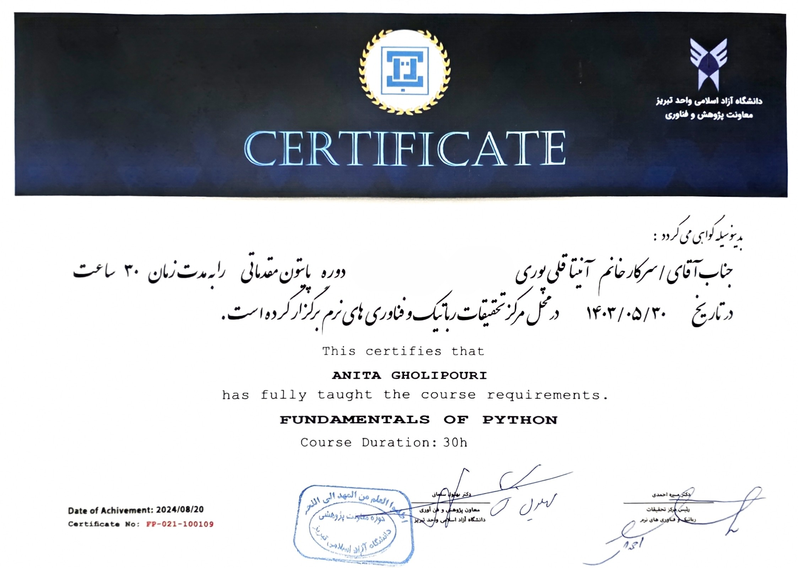

Experience Details
About this Experience
I taught Python programming to students from different academic backgrounds, including students who needed Python for their field of study as well as those who were interested in learning programming. Teaching allowed me to explore how Python can be applied across different disciplines and helped me develop a more adaptable approach to explaining technical concepts. It also strengthened my communication, problem-solving, and interpersonal skills. For me, teaching was also an effective way of learning. Answering students' questions and solving their programming problems required me to revisit concepts from different perspectives, reinforce my own understanding, and continuously learn new approaches.
Key Areas
- Python Programming Fundamentals
- Problem Solving & Debugging
- Teaching Students from Diverse Backgrounds
- Adapting Technical Concepts to Different Learners
- Communication & Presentation
- Practical Python Applications
Verification
View the official certificate:
You can contact the research center to obtain verification of the degree.
Verify Certificate →